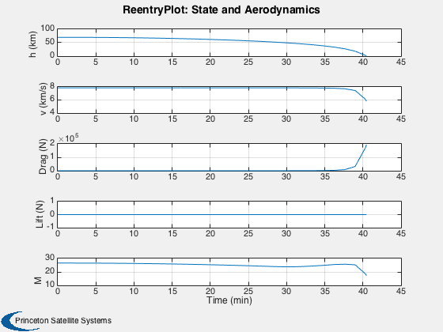
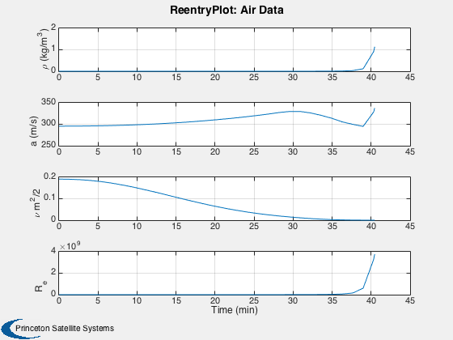
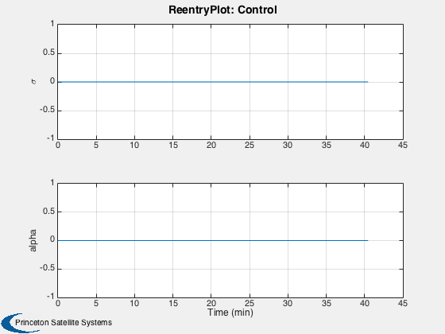
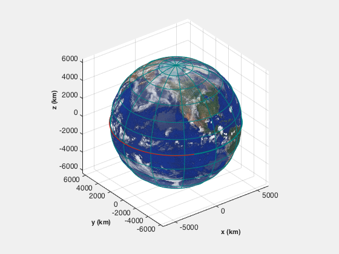
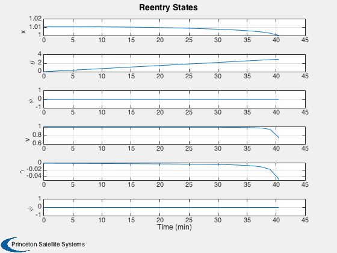

A reentry simulation in spherical coordinates. Uses RHSReentry.m.
------------------------------------------------------------------------
See also Plot2D, TimeLabl, RK4, ReentryPlot, RHSReentry
------------------------------------------------------------------------
Contents
Simulation parameters
nSim = 2400;
dT = 0.1;
dTLow = 0.01;
mu = 3.98600436e14;
Control
d.alpha = 0;
d.sigma = 0;
Parameters
d.g = 9.806;
d.cDP = 0.001;
d.l = 10;
d.sRef = 10;
d.mDry = 5000;
d.thrust = 0;
d.uE = 405*d.g;
d.rPlanet = 6378165;
d.atmData = load('AtmData.txt');
d.omega = 2*pi/86400;
Initial states
vC = sqrt(d.rPlanet*d.g);
r = d.rPlanet + 70000;
v = sqrt(mu/r)/vC;
r = r/d.rPlanet;
x = [r;0;0;v;0;0;0];
x = [x zeros(7,nSim)];
u = zeros(2,nSim+1);
t = zeros(1,nSim+1);
Simulation
for k = 1:nSim
x(:,k+1) = RK4( 'RHSReentry', x(:,k), dT, 0, d );
t(k+1) = t(k) + dT;
u(:,k+1) = [d.sigma;d.alpha];
h = x(1,k+1)*d.rPlanet - d.rPlanet;
if( h < 10000 )
dT = dTLow;
end
if( h < 1000 ) break; end
end
Plotting
nSim = k;
x = x(:,1:(nSim+1));
u = u(:,1:(nSim+1));
t = t(1,1:(nSim+1))*sqrt(d.rPlanet/d.g);
ReentryPlot( x, t, d, u );
[t, tL] = TimeLabl( t);
yL = {'x' '\theta' '\phi' 'v' '\gamma' '\psi'};
Plot2D( t, x(1:6,:), tL, yL, 'Reentry States');
    